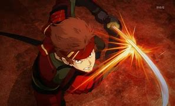

deem uma gota de protagonismo a esse homem agora
Coloca juízo na cabeça do protagonista lixo
Trabalha e estuda, chad demais
bate no kirito adolescente de merda
tem uma guilda hype e nenhuma gota de protagonismo
Espada do Klein
Mudar usuário